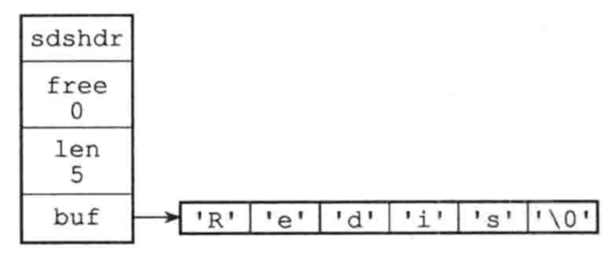

Redis设计与实现笔记一
简单动态字符串：
Redis并没有直接使用C语音传统的字符串（以空字符串结尾的字符数组），而是构建了一种名为简单动态字符串（simple dynamic string ， SDS）的抽象类型。
每个sds.h/sdshdr结构表示一个SDS值：
1 | struct sdshdr{ |
下图展示了一个SDS示例：

其中：
- free属性的值为0，表示这个SDS没有分配任何未使用的空间
- len属性的值为5，表示这个SDS保存一个5字节长的字符串
- buf属性是一个char类型的数组，最后以空字符‘\0’。
SDS遵循C字符串以空字符结尾的惯例，保存的空字符的1字节不计算在SDS的len属性中，并且为空字符分配额外的1字节空间，以及添加空字符到字符末尾等操作都是SDS自动完成，对使用者完成透明，遵循空字符结尾可以重用一部分C字符串函数库里面的函数。
SDS优点：
常数复杂度获取字符串的长度：
通过使用SDS而不是C字符串，Redis将获取字符串长度所需要的复杂度从O(n)降低到了O(1)。
杜绝缓冲区溢出：
当SDS API需要对SDS进行修改时候，API会先检查SDS空间是否满足修改所需的要求，如果不满足的话，API会自动将SDS空间扩展至执行修改所需的大小，然后才执行实际的修改操作。
减少修改字符串时候带来的内存重分配次数：
对于一个包含N个字符的C字符串，这个C字符串的底层实现总是一个N+1个字符长的数组（额外的一个字符空间用于保存空字符），因为C字符串的长度和底层数组的长度之间存在这种关联，所以每次增长或者缩短一个C字符串，程序都总要对保存这个C字符串的数组进行一个内存重分配操作：
- 如果程序执行的是增长字符串操作，比如拼接（append），那么在执行这个操作之前，程序需要先通过内存重分配来扩展底层数组的空间大小—如果忘了这一步就会产生缓冲区溢出。
- 如果程序执行的就是缩短字符串操作，比如截断（trim），那么在执行这个操作之后，程序需要通过内存重分配来释放字符串不再使用的那部分空间—如果忘了这步就会产生内存泄漏。
为了避免C字符串这种缺陷，SDS通过未使用空间解除了字符串长度和底层数组长度的关联，在SDS中，buf数组的长度不一定是字符数量加一，数组里面可以包含未使用的字节，而这个未使用的字节由SDS的free属性记录。
通过未使用空间，SDS实现了空间预分配和惰性空间释放两种优化策略。
空间预分配：
空间预分配用于优化SDS字符串增长操作：当SDS的API对一个SDS进行修改，并且需要对SDS进行空间扩展的时候，程序不仅会为SDS分配修改所必须的空间的时候，还会为SDS分配额外的未使用空间。
其中，额外分配的未使用空间数量由以下公式决定：
- 如果对SDS进行修改之后，SDS的的长度将小于1MB，那么程序分配和len属性同样大小的未使用空间。
- 如何对SDS进行修改后，SDS的长度将大于等于1MB，那么程序会分配1MB的未使用空间。
通过空间预分配策略，Redis可以减少连续执行字符串增长操作所需要的内存重分配次数。
惰性空间释放：
惰性空间释放用于优化SDS字符串缩短操作：当SDS的API需要缩短的SDS保存的字符串时候，程序并不立即使用内存重分配来回收缩短后多出来的字节，而是使用free属性将这些字节数量记录起来，并等到将来使用。
二进制安全：
C字符中的字符必须符合某种编码（比如ASCII），并且除了字符串的末尾之外，字符串里面不能包含空字符，否则最先被程序读入的空字符将被误认为是字符串结尾，这些限制使C字符只能保存文本数据，不能保存像图像、音频、视频、压缩文件这样的二进制数据。
SDS的API都是二进制安全的，所有SDS API都会处理二进制的方式来处理SDS存放在buf数组里的数据，程序不会对其中的数据做任何限制、过滤、或者假设，数据在写入是什么样，被读取就是什么样。
兼容部分C字符串函数：
通过遵循C字符串以空字符结尾的惯例，SDS可以在有需要时重用<string.h>函数库，从而避免了不必要的代码重复。


原文作者: Yang Peng
原文链接: http://ylovex.cn/2019/07/01/Redis设计与实现笔记一/
版权声明: 转载请注明出处(必须保留作者署名及链接)